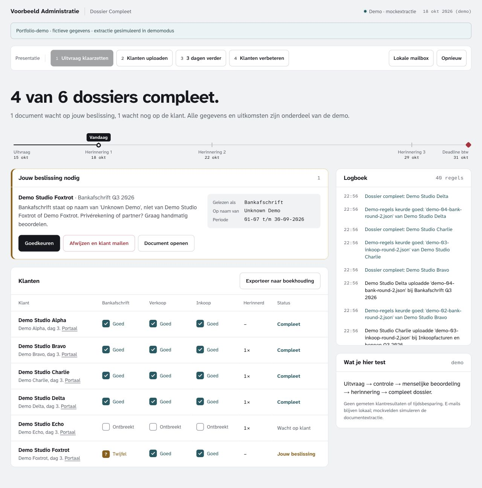

DOCUMENT COLLECTION / LOCAL DEMO

Dossier Compleet · office dashboard · mock scenario
Document workflow
Dossier Compleet
From missing paperwork to a clear next step.
- Problem
- Document requests get scattered across inboxes. Missing items and uncertain uploads need a visible owner.
- Solution
- A client portal and office dashboard with explicit checks, human review, reminders and a local mail outbox.
- Tech
- Python · SQLite · HTML / CSS / JavaScript
- Result
- A working local workflow with tested rules. The default demo uses mock extraction fields; it makes no claim about AI accuracy or client results.